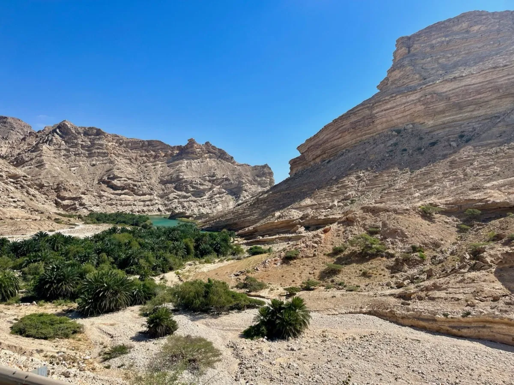

Wadi Shab : comment visiter le canyon turquoise d'Oman
Accès depuis Mascate, traversée en barque, randonnée et baignade, et ce qu'il faut emporter.

Qu'est-ce que le Wadi Shab ?
Le Wadi Shab est un canyon de la côte est d'Oman, entre Mascate et Sour, connu pour ses bassins turquoise, ses palmeraies et une grotte avec une cascade au bout du sentier. C'est l'un des wadis les plus visités du pays, et l'un des rares où l'attraction principale est une baignade.
Comment aller au Wadi Shab depuis Mascate
Le wadi se trouve juste à côté de la route côtière vers Sour, près du village de Tiwi. Comptez environ 1 h 30 à 2 h de route depuis Mascate. Un 4x4 n'est pas nécessaire pour atteindre le parking. Il n'existe pas de transport public pratique : la plupart des visiteurs viennent avec un chauffeur, une voiture de location ou une excursion guidée, souvent combinée avec le gouffre de Bimmah situé sur la même route.
La traversée en barque
Le sentier commence de l'autre côté d'une rivière trop profonde pour être traversée à pied : une petite barque vous fait passer en quelques minutes. Elle se paie en espèces, pour une somme modeste. Les bateliers viennent vous rechercher au point de débarquement à votre retour.
La randonnée et la baignade
Depuis le point de débarquement, prévoyez une marche d'environ 45 minutes à une heure pour atteindre la zone de baignade. C'est une vraie randonnée, pas une promenade : vous traverserez de petits cours d'eau, escaladerez des rochers et marcherez sur une roche parfois glissante. Les premiers bassins que vous croisez ne sont pas la zone de baignade autorisée : continuez jusqu'à la section balisée. La dernière partie se fait à la nage à travers le canyon, jusqu'à la grotte et à sa cascade.
Ce qu'il faut emporter
- Des chaussures d'eau ou des baskets qui peuvent être mouillées (pas de tongs)
- Un maillot de bain, avec des vêtements couvrants par-dessus : Oman est un pays conservateur
- Un sac étanche pour le téléphone, l'appareil photo et les objets de valeur
- De l'eau et une collation : il n'y a aucune installation une fois sur le sentier
- Des espèces pour la barque
Meilleure période
Partez tôt le matin pour profiter de températures plus fraîches et de moins de monde. La saison fraîche, d'octobre à avril environ, est la plus agréable pour randonner à Oman ; lisez notre guide sur la meilleure période pour visiter Oman. Les wadis peuvent être inondés après de fortes pluies : renseignez-vous toujours sur les conditions avant de partir.
Visiter le Wadi Shab avec Wadi Escape
Le Wadi Shab fait partie de notre circuit Oman Coast Explorer, avec le gouffre de Bimmah et Sour, ainsi que de notre Ultimate Oman Experience. Nous pouvons aussi l'ajouter à n'importe quel voyage sur mesure. Vous hésitez sur la durée ? Lisez combien de jours prévoir pour Oman.
Réponses rapides
Faut-il un guide pour le Wadi Shab ?
Le sentier est facile à suivre car les parois du canyon vous maintiennent sur le chemin, mais un guide local aide pour le timing, la traversée en barque et pour combiner le Wadi Shab avec les étapes voisines.
Peut-on se baigner au Wadi Shab ?
Oui, mais uniquement dans la zone de baignade balisée plus loin sur le sentier, pas dans les premiers bassins que l'on croise.
Combien de temps faut-il de Mascate au Wadi Shab ?
Environ 1 h 30 à 2 h en voiture par la route côtière vers Sour.
Guides associés
- Combien de jours pour visiter Oman ? 4, 6, 8 ou 11 jours
- Meilleure période pour visiter Oman : météo et saisons
- Guide du Wahiba Sands : dunes, camps dans le désert et meilleure période
- Guide du Jabal Akhdar : la Montagne Verte d'Oman et Diana's Point
- Que faire à Mascate : Grande Mosquée, souk de Mutrah et vieux Mascate
Envie du Wadi Shab dans votre voyage à Oman ?
Dites-nous quand vous partez et nous l'intégrerons à votre itinéraire.
Demandez votre devis gratuit →